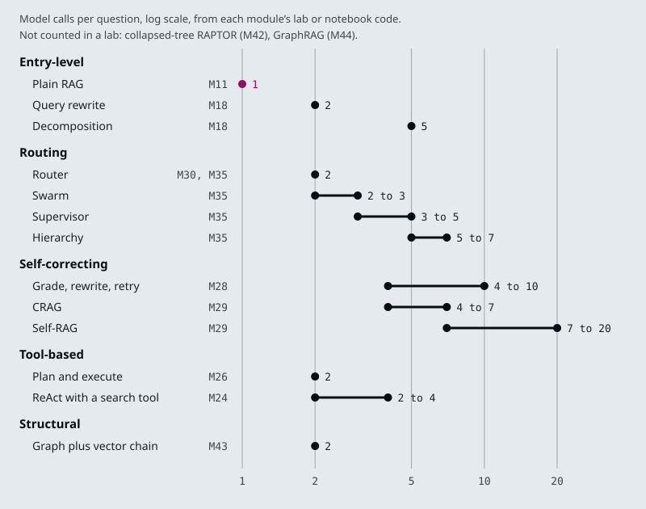

The running example is the Larkspur Cloud handbook from M11. Six questions carry the comparison, and an earlier module’s lab has already run each one through several architectures: Can I export my data after I cancel my plan? (M24, M28, M29), What happens if my server goes down? (M17, M24, M28, M29), My server went down last night. Do I get service credits? (M35), Does Larkspur offer GPU servers? (M29), How does service continuity work? (M42) and Which plans support data export in the EU? (M43). This module reuses their counts and adds no new measurements.
TL;DR
- Start with plain RAG, one retrieval and one model call, and add one component at a time, each justified by a failure on the golden set. Every step up is paid in model calls: in the course’s labs a router costs 2, a supervisor 3 to 5, CRAG 4 to 7 plus a web search and Self-RAG 7 to 20.
- Fix the stage that fails. On What happens if my server goes down? TF-IDF retrieves neither evidence chunk, and dense retrieval ranks both first and second (M17 lab) for the same single call. The M28 retry loop needs 10 calls to get there, and Self-RAG spends 14 without finding them.
- Two kinds of question need a different index. A theme across the handbook needs summaries built at index time (M42), and “available in the EU” needs an edge to check (M43). No retrieval setting stands in for either.
- Late interaction (ColBERT) keeps one vector per token and scores with MaxSim. A passage of up to 180 tokens at 128 dimensions is up to 23,040 numbers before compression, against 1,536 for one
text-embedding-3-smallvector, and it still makes one retrieval and one model call. - Evaluate the pipeline on one golden set with a metric per stage: context recall for retrieval, faithfulness for generation, answer correctness end to end. In this course’s locked environment
import ragasfails, so the notebook’s RAGAS cells do not run as shipped.
Mental model
- Start with the M11 pipeline: one retrieval and one model call per question.
- Run the frozen golden set through it and record the row.
- Hold the row against the requirement: answer quality, latency and cost.
- If it falls short, name the stage. “What happens if my server goes down?” fails in retrieval, because the handbook says “outage”.
- Add the cheapest rung that fixes that stage. Dense retrieval finds both outage chunks in the M17 lab and still makes one call. Then measure again.
- When the row meets the requirement, ship it, and keep the golden set for the next change.
Every architecture in the course is plain RAG plus components: better retrieval, a router, a grader, a loop, more agents, a different index. Each component has a price in model calls, latency and parts to test, so it stays only when the golden set shows the failure it fixes. The simplest architecture that meets the requirement is the one this loop stops at.
The architecture map
Lesson 45.1: The agentic RAG architecture map. Notebooks: 01a_AGENTIC_RAG_ARCHITECTURES.md
The course keeps two inventories of what it teaches. The wider one, docs/agentic-architectures.yaml, rendered as Agentic Architecture Coverage, compares the course with an upstream catalogue of 35 agentic architectures in seven families and finds all 35 covered. Five of them are retrieval architectures, and all five are on the mandatory track:
| # | Architecture | Taught in |
|---|---|---|
| 23 | Agentic RAG | M28, M31 |
| 24 | Corrective RAG (CRAG) | M29 |
| 25 | Self-RAG | M29 |
| 26 | Adaptive RAG | M30 |
| 27 | GraphRAG | M43, M44 |
The lesson’s reading, 01a_AGENTIC_RAG_ARCHITECTURES.md, maps the retrieval side by graph shape rather than by folder. It names five architectures covered end to end (CRAG, Adaptive RAG, Self-RAG, domain-router RAG and retrieval as a tool) and writes each one as its add_node and add_conditional_edges structure, for example retrieve → grade_documents → (rewrite_query ⟲ | web_search) → generate_answer for CRAG. Its table has a sixth row, the M28 agent with query rewriting and guardrails, although the text above it says five notebooks. It lists RAPTOR and the GraphRAG notebooks as anthology variants, and one gap: CacheRAG exists in the source repository only as an empty placeholder.
Neither inventory says when to use what. For that, the architectures need a common unit. Every one of them is the M11 pipeline (retrieve, then generate) with components added, and each component is paid for in model calls per question. The course’s labs have counted those calls on Larkspur questions:

The ranges come from different questions and settings, so read them as orders of magnitude. Plain RAG is 1 call. Routing and tool loops cost 2 to 7. The self-correcting loops climb to 10 (M28’s retry loop with two rewrites) and 20 (Self-RAG at k = 5 on a question the handbook cannot answer, M29). Collapsed-tree RAPTOR and GraphRAG have no counted query cost; their main cost is LLM work at index time, which this axis does not show.
What each family adds
The module objectives sort the architectures into five families. Each family adds a different kind of component to plain RAG, and each has a module whose theory page measures what that component buys.
- Entry-level changes nothing in the control flow and improves what reaches the model. Plain RAG and its baseline (M11), indexing that searches small and returns large (M16), hybrid search (M17), query transformation (M18) and reranking (M19). Late interaction (lesson 45.2) belongs here too. Most add no model call; query rewriting adds one, decomposition four.
- Self-correcting puts a judgment between retrieval and the answer: grade, rewrite and retry (M28), CRAG and Self-RAG (M29), graders and user feedback (M32). Each check is a model call, and each failed check sends the question round again.
- Routing decides where a question goes before anything is retrieved: a classifier over knowledge bases and adaptive RAG (M30), then supervisors, hierarchies and swarms of specialist agents (M35). A misroute hides the answer, because the filter restricts retrieval to a knowledge base that does not hold it.
- Tool-based hands retrieval to a model that decides when to call it: ReAct (M24), plan and execute (M26) and retrieval as a tool (M31). The same tool can be served over MCP and called across agents over A2A (M38 to M41) without changing the loop.
- Structural changes the shape of the index: summary trees (M42), knowledge graphs (M43) and community-based GraphRAG (M44). The work moves to index time, and the index has to be rebuilt or patched when the handbook changes.
Memory (M33, M34) cuts across all five. A follow-up such as How long do I have? needs rewriting into a standalone question before any of these architectures can retrieve for it.
The families also stack. The M28 agent is a tool-based loop with a self-correcting grader; adaptive RAG in M30 is a router in front of two graders. When a design names several families, count each component’s calls separately, so a later review can remove one without guessing what it cost.
Key Takeaways
- Every architecture is retrieve-then-generate with components added. Compare them in model calls per question: plain RAG is 1, routing and tool loops 2 to 7, self-correcting loops up to 20.
- Each family adds one kind of component: better context, a judgement step, routing, a model that calls retrieval, or a new index shape whose cost moves to index time.
- Families stack. Count each component’s calls separately so a review can remove one and know what it saves.
Check yourself
1. What common unit does the lesson use to compare the architectures, and what does that unit leave out?
Model calls per question, because every architecture is the M11 pipeline with components added: plain RAG is 1 call, routing and tool loops 2 to 7, and self-correcting loops climb to 10 and 20. It leaves out index-time LLM work, which is the main cost of collapsed-tree RAPTOR and GraphRAG, so those have no counted query cost on the axis.
2. The agentic RAG agent with query rewriting is a tool-based loop with a self-correcting grader. How should a design document count its cost?
Count each component’s calls separately: the loop’s calls and the grader’s calls. A later review can then remove one component and know what it saves, instead of guessing from a single total.
3. A customer asks a follow-up, How long do I have?, and every architecture retrieves the wrong chunks. What is missing?
Memory (M33, M34), which cuts across all five families. The follow-up has to be rewritten into a standalone question using the conversation before any architecture can retrieve for it.
The stack in one notebook
Lesson 45.2: End-to-end RAG ecosystem walkthrough (incl. ColBERT and RAGAS). Notebooks: 02a_rag_ecosystem.ipynb
02a_rag_ecosystem.ipynb walks the whole RAG stack in one place. Its recap note says what is new: the early parts are a refresher of earlier modules, the parts it owns are RAPTOR, ColBERT and agentic self-correction, and the evaluation sections are pointers. Of those three, only ColBERT runs as code here; RAPTOR and self-correction are described and linked out.
| Notebook part | What it builds | Taught in depth |
|---|---|---|
| Basic RAG | load, split, embed, retrieve, generate | M11 |
| Query transformations | multi-query, RAG-Fusion, decomposition, step-back, HyDE | M18 |
| Routing and query construction | logical and semantic routing, a metadata filter written from the question | M18, M30 |
| Indexing | multi-representation indexing, RAPTOR (described), ColBERT | M16, M42, below |
| Retrieval and generation | Cohere reranking, CRAG and Self-RAG (described), long context | M19, M29 |
| Evaluation | judges written from scratch, deepeval, grouse, RAGAS | below |
The notebook ships without outputs. Sentences such as “The output is remarkable” after the rerank cell, or “faithfulness and context_recall are perfect” after the RAGAS cell, describe a run that is not saved with it. Treat them as expectations to check.
Its long-context section argues for the hybrid the earlier modules reach as well: retrieval picks the few passages that matter, and a long-context model reads them. M11’s interview questions cover when sending the whole corpus instead is right and when it breaks.
Late interaction (ColBERT)
A single-vector retriever (M14) turns a passage into one embedding and the question into another, and scores the pair with cosine similarity. The notebook calls this a “bag-of-words” approach, but the embedding model reads the tokens in context and pools them, so word order and phrasing count. What a single vector loses is which part of the passage matched. A 180-token passage that mentions the answer once is one point in space, pulled toward everything else it says.
ColBERT (Khattab and Zaharia, SIGIR 2020) keeps a contextual vector for every token of the passage and every token of the question. The score is MaxSim: for each question token, take its highest similarity with any passage token, then sum over the question tokens.
flowchart TB
subgraph late["Late interaction"]
T1["Question:<br/>1 vector per token"] --> M["Best match per<br/>question token"]
T2["Passage:<br/>1 vector per token"] --> M
M --> S["Sum"]
end
subgraph single["Single vector"]
V1["Question:<br/>1 vector"] --> C1["Cosine"]
V2["Passage:<br/>1 vector"] --> C1
end
The name places it between the two retrieval models the course already uses. A bi-encoder computes everything at index time and compares one pair of vectors at query time. A cross-encoder reranker (M19) computes nothing in advance and reads every question and passage pair together at query time. ColBERT computes the passage token vectors at index time and lets the tokens interact only at the end, through a cheap max and sum. M21 uses the same scoring on page images, where every image patch gets a vector.
The notebook runs it through RAGatouille:
RAGPretrainedModel.from_pretrained("colbert-ir/colbertv2.0")loads ColBERTv2.RAG.index(collection=[full_document], index_name="Miyazaki-ColBERT", max_document_length=180, split_documents=True)splits a Wikipedia page fetched at run time into passages and indexes every token.RAG.search(query="What animation studio did Miyazaki found?", k=3)returns the top three passages, andRAG.as_langchain_retriever(k=3)wraps the index as a LangChain retriever, so the rest of a chain does not change.
The cost moves into storage. ColBERTv2 stores 128 dimensions per token vector (Santhanam et al., ColBERTv2, NAACL 2022). A passage of up to 180 tokens is then up to 23,040 numbers, against 1,536 for one text-embedding-3-small vector, 15 times as many before compression. ColBERTv2 shrinks each vector to a centroid id plus a residual of 1 or 2 bits per dimension. Pages in M21 are larger still: ColSmol stores 1,139 vectors of 128 dimensions per page.
On the architecture map, late interaction is an entry-level change. It replaces the retriever and keeps one retrieval and one model call per question. Weigh it against the other retrieval upgrades on the same golden set: BM25 in a hybrid (M17) already catches exact codes, where dense retrieval ranked the E-4021 chunk 5th, and a cross-encoder reranks a wide candidate list at a measured latency.
End-to-end evaluation
The notebook names three properties of a good RAG answer: faithfulness (the answer can be derived from the retrieved context), correctness (it matches a reference answer) and contextual relevancy (the retrieved context fits the question). Each one judges a different stage, and that is what makes them useful for choosing an architecture: an end-to-end score says the outage answer is wrong, and a stage score says whether retrieval or generation made it wrong.
It measures them three ways:
- Judges written from scratch. A
gpt-4ojudge with structured output returns a score from 0 to 1. The correctness prompt compares the answer with a reference; the faithfulness prompt asks whether the answer can be deduced from the context, with few-shot examples. Under that rule the answer “6” to what is 3+3? with the context “6” is unfaithful, because the context states the number but not the sum. That is stricter than “the context does not contradict it”, so write down which definition a score uses. - deepeval.
GEval(name="Correctness", model="gpt-4o")andFaithfulnessMetric()run overLLMTestCaseobjects.ContextualRelevancyMetricis imported and never used. grouse cannot share this environment, so its cells need a separate one, and the setup guide the cell’s comment mentions is the original repository’s setup notes. - RAGAS. Three questions, each with an answer, the retrieved contexts and a reference answer, go into a Hugging Face
Datasetwith the columnsquestion,answer,contextsandground_truth, andevaluate()scores four metrics. In the locked environment (ragas0.4.3 withlangchain-community0.4.2) the cell cannot start:import ragasraisesModuleNotFoundError: No module named 'langchain_community.chat_models.vertexai'.
The metrics map onto the stages like this:
| Metric | Stage it judges | Needs a reference answer |
|---|---|---|
context_recall (RAGAS) |
retrieval | yes |
ContextualRelevancyMetric (deepeval) |
retrieval | no |
faithfulness (RAGAS, deepeval, from scratch) |
generation, against the retrieved context | no |
answer_relevancy (RAGAS) |
the answer, against the question | no |
answer_correctness (RAGAS), GEval correctness |
the whole pipeline | yes |
For an architecture decision, run every candidate over the same golden set and record one row each: the stage metrics, model calls and retrievals per question, and latency. Retrieval metrics such as recall@k need no judge; the M11 baseline row is computed from the golden set’s labelled evidence chunks. The judged metrics cost model calls at evaluation time, one or more per metric per question, which is a reason to keep the golden set fixed and small enough to run on every change. Report per question as well as the mean: on the outage question, TF-IDF and dense retrieval differ completely, and a mean over three questions blurs it.
Key Takeaways
- ColBERT keeps a vector per token and scores with MaxSim, so it knows which part of a passage matched. It still costs one retrieval and one model call, but stores about 15 times more numbers before compression.
- Use stage metrics to locate a failure: context recall and relevancy judge retrieval, faithfulness judges generation, and correctness judges the whole pipeline.
- Run every candidate on the same fixed golden set, report per question as well as the mean, and write down which faithfulness definition a judge uses.
Check yourself
1. What does a single-vector retriever lose that ColBERT's late interaction keeps?
Which part of the passage matched. A 180-token passage that mentions the answer once becomes one point, pulled toward everything else it says. ColBERT keeps a contextual vector for every token and scores with MaxSim: for each question token, its best similarity with any passage token, summed over the question tokens.
2. How many numbers does ColBERTv2 store for a 180-token passage before compression, against one text-embedding-3-small vector?
180 × 128 = 23,040 numbers, against 1,536: 15 times as many. ColBERTv2 then shrinks each token vector to a centroid id plus a residual of 1 or 2 bits per dimension.
3. An end-to-end correctness score says the outage answer is wrong. Which metrics tell you whether retrieval or generation caused it?
The stage metrics. context_recall (RAGAS, needs a reference answer) and ContextualRelevancyMetric (deepeval) judge retrieval; recall@k needs no judge at all, only the labelled evidence chunks. faithfulness judges generation against the retrieved context. Report them per question, because a mean over three questions blurs the outage case.
Architecture selection
Lesson 45.3: Decision framework: picking the simplest architecture that works
Choosing an architecture is a chain of questions asked of the golden set. Each question names a failure, and each “yes” points at the family that fixes it. A “no” moves on to the next question, so a design only reaches the expensive families when the cheaper fixes are ruled out.
flowchart TD
Q1{"Plain RAG passes<br/>the golden set?"} -- yes --> A1["Ship it"]
Q1 -- no --> Q2{"Evidence missing<br/>from the top k?"}
Q2 -- yes --> A2["Fix retrieval<br/>M14 to M19"]
Q2 -- no --> Q3{"Question spans<br/>several sources?"}
Q3 -- yes --> A3["Split or route<br/>M18, M30, M35"]
Q3 -- no --> Q4{"Needs a theme or<br/>a relationship?"}
Q4 -- yes --> A4["Change the index<br/>M42 to M44"]
Q4 -- no --> Q5{"Next search depends<br/>on the last result?"}
Q5 -- yes --> A5["Agent loop<br/>M24, M26, M31"]
Q5 -- no --> Q6{"Wrong answer<br/>costs a ticket?"}
Q6 -- yes --> A6["Add a check<br/>M28, M29"]
Q6 -- no --> A7["Ship, and log<br/>the misses"]
Each branch has a counted example from an earlier lab:
- Evidence missing: fix retrieval. On What happens if my server goes down? TF-IDF retrieves neither evidence chunk (M24 lab), because the handbook says “outage”. Dense retrieval ranks
incidentsandslafirst and second (M17 lab) for the same single call. The loops that work around the miss pay for it: the M28 retry loop finds the evidence on its second rewrite, at 10 calls, and Self-RAG spends 14 calls on three passes over the same chunks (M29). M29’s own rule is that retrieval misses are fixed in retrieval. - Several sources: split or route. My server went down last night. Do I get service credits? needs operations and billing. On three knowledge bases a router spends 2 calls and never asks billing, a swarm answers in 3 and a supervisor in 5 (M35 lab). On one index, decomposition splits the question, at 5 calls and 3 retrievals for three sub-questions (M18).
- A theme or a relationship: change the index. How does service continuity work? reaches 1 source passage from the leaves and 4 through summaries at the same two-node budget (M42 lab). Which plans support data export in the EU? needs the EU edge checked: at
k = 5both eligible plans survive the check, and without the graph nothing can tell them from the plans that only mention exports (M43 lab). - Path depends on results: an agent loop. A loop rewords failed searches: ReAct lifts mean evidence recall on the M11 golden set from 0.50 to 1.00 for 9 model calls instead of 3 (M24). When the lookups are known in advance, a fixed plan makes 2 calls however many lookups it holds (M26).
- Costly mistakes: add a check. A relevance grader keeps unrelated chunks away from the model. On the export question the M28 loop costs 4 calls; on Does Larkspur offer GPU servers? it ends in a no-results reply after 9. A web fallback (CRAG) does not help here, because every Larkspur fact lives in a private handbook the web cannot see (M29).
Asking about a costly mistake last means the check runs on top of the best retrieval the design already has, so it grades good chunks instead of looping over bad ones.
Complexity budget
A complexity budget is what one question may spend before the answer reaches the user. Its main unit is model calls: they set the bill, and since the course’s notebooks make them one after another, they set the latency too. Retrievals, tokens re-read in every loop iteration, index-time LLM work and the number of prompts to test count against the same budget. A component earns its place when it buys a measured gain on the golden set that nothing cheaper buys.
The interactive lab holds the counts earlier labs recorded for the six Larkspur questions, each rung with its model calls, retrievals and what the lab saw. Set the data shape, the latency budget in model calls and what a wrong answer costs. A rung qualifies when its data exists, it answers the question (or refuses one the handbook cannot answer), it has a check when a wrong answer costs a support ticket, and its calls fit the budget. The pick is the first qualifying rung in order of calls.
The lab’s rules agree with an independent Python copy of them on all 960 control settings, and each of its 30 counts traces to a theory page, a lab’s own code or a notebook. Five settings show the budget at work:
- Outage, wrong answer cheap. Dense retrieval at 1 call, at every budget. The hybrid blend at
alpha = 0.5is also 1 call, but it keepsslaand losesincidents(recall@3 0.50 in the M17 lab), so the ladder passes it. - Outage, wrong answer costs a ticket. The only counted rung with a check that answers is the M28 loop at 10 calls. Below a budget of 10 nothing fits. A grader on top of dense retrieval may cost less, but no course lab has counted it; count it on your golden set before you ship it.
- Service credits, three knowledge bases. The swarm at 3 calls; at a budget of 2 nothing fits, because the router’s 2 calls answer only the outage half. On one index the pick is decomposition at 5.
- Export, any data shape. Plain TF-IDF RAG at 1 call. Splitting the handbook into three knowledge bases does not make a router necessary; the question has one domain and plain retrieval over all three answers it.
- GPU servers, wrong answer costs a ticket. The M28 loop at 9 calls, ending in a safe no-results reply. Self-RAG spends 14 and still generates an answer with no context behind it.
The budget also has to hold what the lab’s call counts leave out:
- Index-time work. RAPTOR in M42 makes one summary call per cluster at every level of the tree, with
min(10, len(current_texts) // 2)clusters per level. GraphRAG and the M43 graph builders make an extraction call per chunk. This work is paid again when the handbook changes. - Tokens per call. A loop re-reads its whole message list on every call; the M24 outage run reads about 451 tokens of context over four calls.
- Parts to test. Every grader is a prompt with its own failure mode. M28’s topic check rejects silently, and M29’s groundedness check is skipped when no document passed. Each one needs questions in the golden set that exercise it.
The lab brief turns this into a document: a two-page design for your capstone that justifies each component against a simpler alternative. For each component, write the failure on the golden set that it fixes, the simpler alternative you tried first, the measured gain and the calls it adds per question.
Key Takeaways
- Pick an architecture by asking which failure the golden set shows, cheapest fix first: retrieval, then routing, index shape, an agent loop, and a check last.
- Fix retrieval misses in retrieval. Dense retrieval found the outage evidence in 1 call, while loops that worked around the miss spent 10 and 14.
- Set a complexity budget in model calls per question, and count index-time work, tokens re-read per loop and prompts to test against it. Keep a component only for a measured gain nothing cheaper buys.
Check yourself
1. Why does the decision chain ask whether a wrong answer costs a ticket only after the retrieval, routing, index and loop questions?
So the check runs on top of the best retrieval the design already has, and grades good chunks instead of looping over bad ones. Each earlier question rules out a cheaper fix first, so a design reaches the expensive families only when it needs them.
2. The service-credits question runs over three knowledge bases with a budget of 2 model calls. What does the lab pick, and what changes at 3?
Nothing fits at 2: the router’s 2 calls answer only the outage half and never ask billing. At a budget of 3 the swarm qualifies and is picked. On one index the pick would be decomposition at 5 calls.
3. TF-IDF misses the outage evidence, and a teammate proposes Self-RAG to recover it. What does the framework recommend instead?
Fix retrieval, because the evidence is missing from the top k. Dense retrieval ranks incidents and sla first and second in a single call, while the loops pay to work around the miss: the M28 retry loop takes 10 calls and Self-RAG 14. M29’s own rule is that retrieval misses are fixed in retrieval.
Interactive lab
The simplest architecture that works: open the file in a browser. It opens on the outage question with one handbook index, a budget of 5 calls and a cheap wrong answer: dense retrieval wins at 1 call, and the ladder shows TF-IDF and the hybrid blend falling short. Set the wrong answer to cost a support ticket and the only counted rung that has a check and answers is the M28 retry loop at 10 calls, so nothing fits until the budget reaches 10. Then pick the service-credits question and switch between one index and three knowledge bases: decomposition at 5 calls against a swarm at 3, with the router’s 2 calls never asking billing.
How it connects
- Before: every module. The baseline and the golden set come from M11; retrieval upgrades from M14 to M19; the self-correcting loops from M28, M29 and M32; routing from M30 and M35; tool-based retrieval from M24, M26 and M31; structural indexes from M42, M43 and M44.
- Next: the capstone projects. Each ships a working system, an evaluation report on a golden question set and a demo, and the M45 lab brief asks for the design document behind it: every component justified against a simpler alternative.
Interview Spotlight: 5 Questions You Might Get Asked
Production questions in the style of OpenAI, Anthropic and Google interviews for applied AI roles.
1. Larkspur’s support assistant moved from plain RAG to Self-RAG. Latency is several times higher, and “What happens if my server goes down?” still gets a wrong answer. What happened, and what do you change?
What a strong answer covers:
- Prints the retrieved chunks per pass: TF-IDF returns
reboot,sizingandexportevery time, so the checks see the gap and loop over the same chunks (14 calls in the M29 lab atk = 3) - Names the failing stage as retrieval: the handbook says “outage” and “availability”, the question says “goes down”
- Fixes retrieval first (dense ranks both evidence chunks first and second in the M17 lab, at one call) and keeps a check only where a wrong answer is costly
- Caps every loop in code and logs model calls per question, so a later regression shows up in the logs before it reaches the bill
2. The product team wants billing, operations and data specialists. When is a router enough, when do you need a supervisor, and when a swarm?
What a strong answer covers:
- Measures how many requests span two domains; a router (2 calls) sends My server went down last night. Do I get service credits? to operations only, and billing never sees the credits question
- A supervisor answers it in 5 calls, 3 of them routing, and gives one place to log, test and cap every decision
- A swarm answers it in 3 and each follow-up costs 1 call against 3 for the supervisor, but routing quality now lives in every agent’s prompt
- Keeps plain RAG over all three knowledge bases as the baseline: the export question needs one call whatever the data is split into
3. Leadership asks whether GraphRAG is worth replacing the flat index. How do you measure it?
What a strong answer covers:
- Runs both on the same golden set and budget, with questions of each kind: a specific fact, a theme across the handbook, a relationship such as EU availability
- Reports per stage and per question: context recall shows what reached the model, answer correctness what came out, and a mean can hide one question type that got worse
- Counts index-time work separately from query time: summary and extraction calls, re-indexing after a handbook edit, storage
- Treats lab fixture counts (M42’s 1 against 4 source passages, M44’s 2 against 4 relations) as mechanisms to test; neither lab measured answer quality
4. A customer asks “Does Larkspur offer GPU servers?” The handbook does not say. How do you make sure the assistant refuses instead of guessing?
What a strong answer covers:
- Plain RAG still sends the top
kchunks, all unrelated, so only the prompt and a permission to say “I don’t know” stand between them and a guess - A relevance grader with a bounded rewrite loop ends in a no-results reply, at 9 calls with two rewrites allowed (M28); a score floor is cheaper if the golden set supports one
- CRAG’s web fallback cannot see a private handbook, and the M29 Self-RAG graph generates with no context and skips the groundedness check on that path
- Adds unanswerable questions to the golden set and tracks the refusal rate, so a prompt change that starts guessing fails a test
5. A teammate proposes replacing the dense retriever with ColBERT. What do you check before agreeing?
What a strong answer covers:
- Storage and indexing: one vector per token instead of one per chunk, up to 23,040 numbers per 180-token passage before compression against 1,536
- The questions that fail today and why: exact codes such as E-4021, where dense ranked the right chunk 5th in M17, may be cheaper to fix with BM25 in a hybrid
- A cross-encoder reranker (M19) reads question and chunk together at query time; ColBERT precomputes document vectors, so compare both on recall and latency, not one in isolation
- Model calls do not change, so the decision rests on retrieval recall, latency and storage measured on the golden set
Key Takeaways
- Build plain RAG first and record its row on a frozen golden set; every later component has to beat that row on the questions it targets.
- Name the failing stage before adding anything. A retrieval miss is fixed in retrieval, at no extra model calls; a loop on top of it pays repeatedly for the same missing chunk.
- Count what each component costs in model calls, retrievals and index-time work, and set a budget per question before choosing; loops get a cap in code.
- Change the data when the question needs it: summaries for themes, explicit edges for constraints, separate knowledge bases only when routing to them buys something.